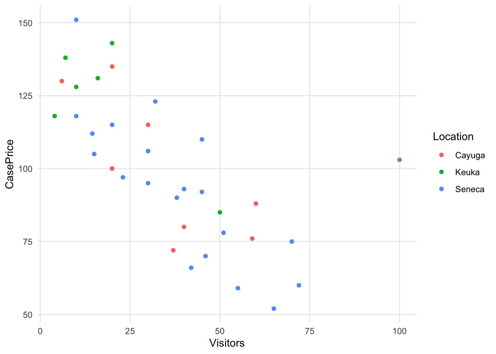
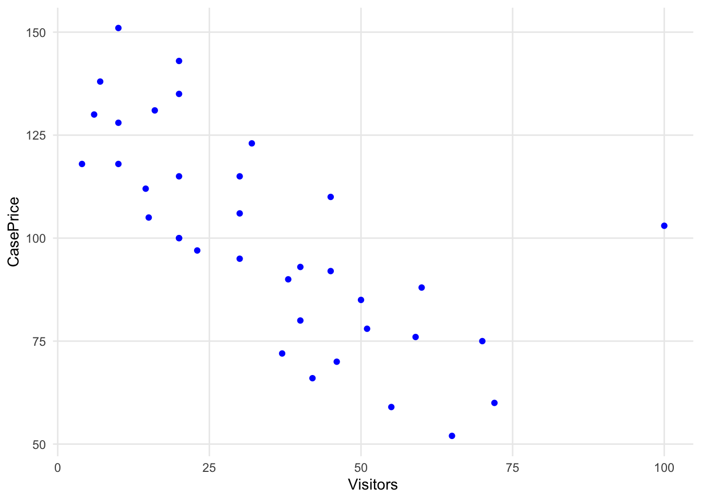
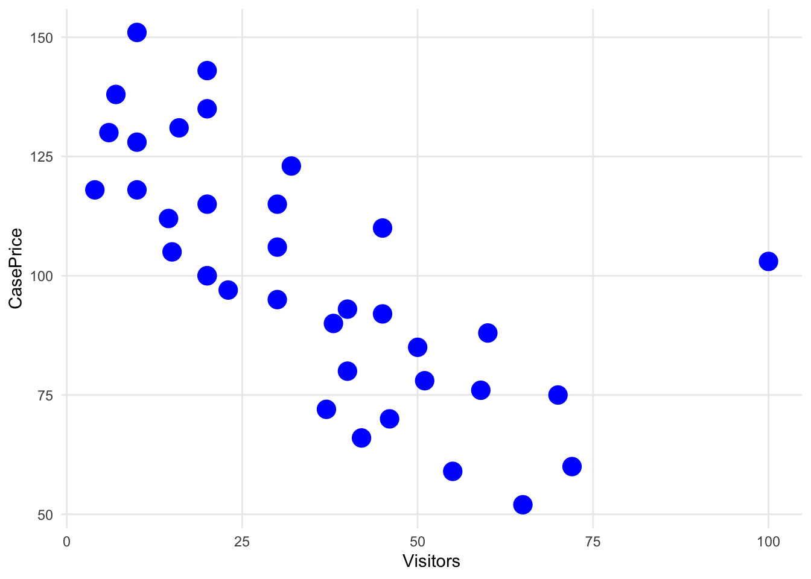

Chapter 2 Building basic visualizations with ggplot2
In Chapter 1, we covered a variety of visualization types and how to read them. All of those visualizations were created using an R package called ggplot2. This package is a very common way of creating visualizations in R, partly because it is so versatile. Once you understand the basics of how to create ggplot2 visualizations, you can use the same techniques to produce an enormous range of visualizations.
In this chapter, we’ll focus on the basic components of the R code you need to write to create ggplot2 visualizations. We’ll use the word syntax to refer to the components you need to create and the way you need to organize those components. Instead of trying to create a bunch of different visualizations, we start with one simple visualization and keep adding to it to learn more about ggplot2 features. In future chapters we will cover other kinds of visualizations and more advanced ggplot2 features.
2.1 Basic ggplot2 syntax
To learn the syntax of a ggplot2 visualization, it helps to understand how ggplot2 thinks of a visualization (Figure 2.1).
FIGURE 2.1: The ggplot2 model of a visualization.
In ggplot2, a visualization is called a “plot.” Each plot uses one or more visualization types like the ones we learned in Chapter 1 (e.g., bar chart, scatter plot). The visualization type is called a “geom,” which is short for geometric object. You can think of the geom as the shape of the visual elements in the plot.
Each possible geom has default visual properties. This makes sense if we step back and think about a geom as a type of visualization. Every bar chart, for example, has a few things in common with every other bar chart: the numbers are represented by rectangles that vary in length, and there is a separate bar for each value of a categorical variable. To say that another way, a bar chart by default has one or more bars lined up along one axis, and the other axis allows you to compare the lengths of those bars. The default visual properties for a bar chart, then, are that it has two axes: one that serves to organize the bars, and one that serves to measure the lengths.
In ggplot2, the visual properties associated with each geom are called “aesthetics.” The aesthetics vary a bit from geom to geom, but there are some aesthetics that are required for almost all geoms. The most common aesthetics are called “x” and “y”, and they stand for the x and y axes. Most geoms use an x axis to organize one variable and a y axis to organize another. There are plenty of other optional aesthetics, however, that describe how a geom should look. The bars in a bar chart don’t just have a position on the x axis and a length on the y axis. They also have a fill color, a fill transparency value, a border color, a border size, and a border line type.
I think of a geom’s aesthetics as questions on a form that I need to fill out for the plot to work correctly. If something is option, like the fill color, I don’t really have to answer that question on the form. There is a default value ggplot2 will use if I don’t have a specific value in mind. For the x and y axes, though, ggplot2 does not have a default. Those are required, and ggplot2 will give me an error if I try to make a plot without providing that information.
How do I tell ggplot2 what values to use for the aesthetics, like the x and y axes? I need to create a “mapping” between the dataset I want to visualize and the geom’s aesthetics. Again, I think if we step back, this is pretty logical. We need to get our data into our visualization. Different parts of the data need to be associated with different parts of our visualization. That process of creating associations between our dataset and our visualization is called mapping. In ggplot2, we will map variables from our dataset to aesthetics in our geom one by one. For each aesthetic we want to specify, we will pick a variable and map it to that aesthetic. In a bar chart with vertical bars, we would map a categorical variable to the x aesthetic and a numerical variable to the y aesthetic. For horizontal bars, the categorical variable would be mapped to the y aesthetic and the numerical variable to the x aesthetic.
Looking again at our diagram in figure 2.1, we can summarize it like this. A plot contains one or more geoms that specify the visualization type. A geom determines the required and optional aesthetics for that part of the plot. To bring data into the visualization, create a mapping between variables in a dataset and the (required or options) aesthetics of the geom.
Now that we understand how ggplot2 thinks about the structure of a plot, we can turn to the code that we need to write.
2.1.1 Simple Plot Template
In R, there is often many different ways of writing code to accomplish your goals. The same is true in ggplot2. We’ll start with learning a template for a simple ggplot2 plot, and then we will learn some additional ways of writing the code that may be easier or work better for different kinds of visualizations.
# start with the main plot function and set the data frame
ggplot(data = data_frame) +
# next add a geometry layer and create the mapping between data frame and aesthetics
geom_...(mapping = aes(aesthetics1 = data_field1, aesthetics2 = data_field))2.2 Example: Vineyards in the Finger Lakes Region of New York State


2.2.3 Step 3: Choose a shape layer
# This will throw an error.
ggplot(data = vineyards) +
geom_point()
# Error: geom_point requires the following missing aesthetics: x and y Run `rlang::last_error()` to see where the error occurred.2.2.4 Step 4: Map Variables to Aesthetics
# Start with the required aesthetics: x and y.
# We'll be mapping x to the Visitors column and y to the CasePrice column.
mapped_variables <- aes(x=Visitors, y=CasePrice)
ggplot(data = vineyards) +
geom_point(mapping = mapped_variables)# or, all in one step:
ggplot(data = vineyards) +
geom_point(mapping = aes(x=Visitors, y=CasePrice))
Now, we’ll add a third variable. We’ll also map the Location variable to the color aesthetic.
# Start with the required aesthetics: x and y.
# We'll be mapping x to the Visitors column and y to the CasePrice column.
ggplot(data = vineyards) +
geom_point(mapping = aes(x=Visitors, y=CasePrice, color=Location))
2.2.5 Step 5: Adjust the Defaults
# Changing the default size of all of the points
ggplot(data = vineyards, mapping = aes(x=Visitors, y=CasePrice)) +
geom_point(size=5)# Changing the default color of all of the points
ggplot(data = vineyards, mapping = aes(x=Visitors, y=CasePrice)) +
geom_point(color="blue")
# Changing both size and color
ggplot(data = vineyards, mapping = aes(x=Visitors, y=CasePrice)) +
geom_point(size=5, color="blue")